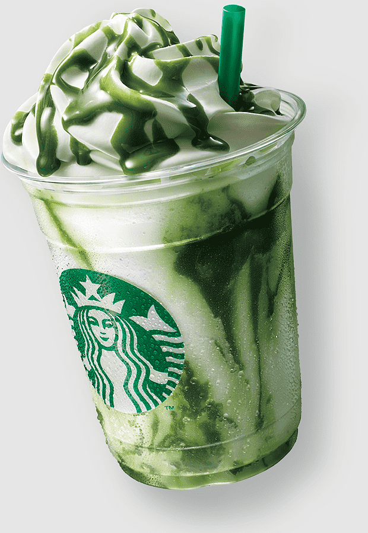

Its not just a Coffee
Its Starbucks
In September 2012, Starbucks announced plans to introduce the Verismo, a consumer-grade single-serve coffee machine that uses sealed plastic cups of coffee grounds, and a "milk pod" for lattes. In November 2012, Starbucks Verismo became publicly available, consisting of a line of coffee makers that brew espresso and regular chocolate from coffee capsules, a type of pre-apportioned single-use container of ground coffee and flavourings utilizing the K-Fee pod system
learn More
